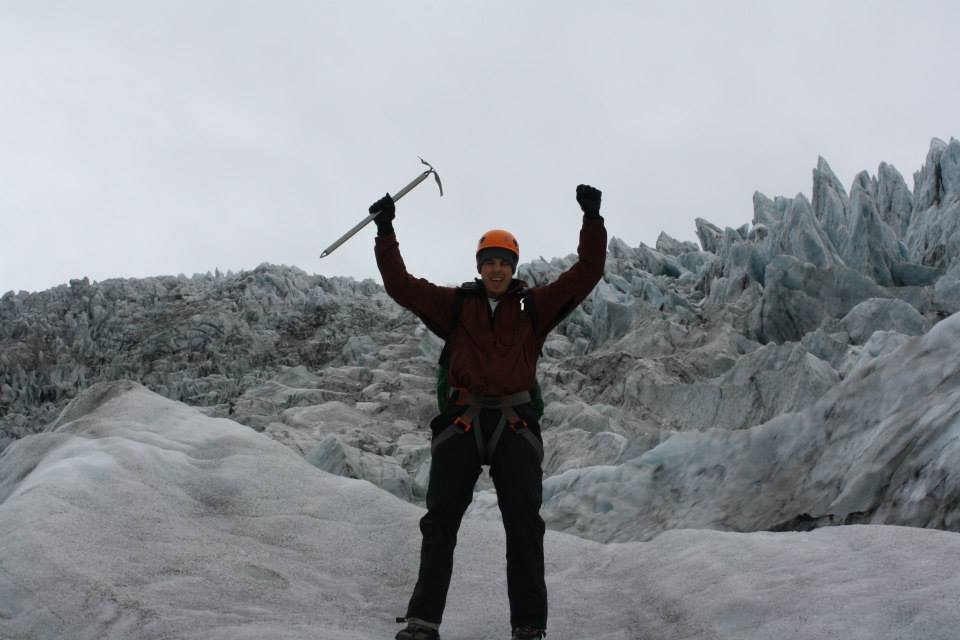
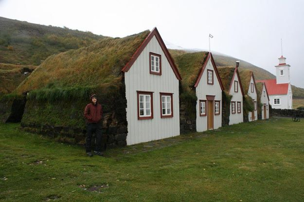
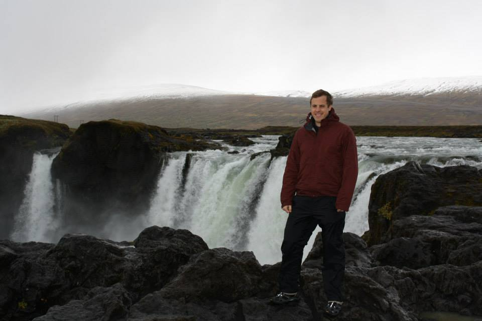

name: Doug Stockalper
email: dstockalper@gmail.com
phone: (760) 505-2465



About Me:
Hi! My name is Doug and I'm learning a bit of HTML/CSS/Javascript in GA's Front End Web Development course. This may not look like much, but I've improved a great deal in a matter of weeks. It can be frustrating, but also prety fun.
The images on this page are from my recent trip to Iceland. If you want to see more of the floating glacier, go ahead and click on this texted section or on the picture next to it. The sections will swap positions, revealing more of the glacier background.